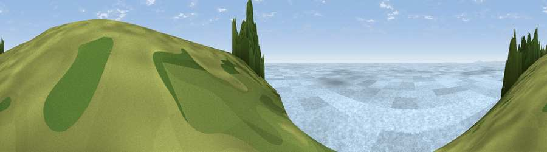

Seabird viewpoint
#15671 in England · top 74% of its area beats it · near RottingtonThe view, rendered

A 360° render of this exact spot computed from the terrain model, tree cover and land cover — summer colours, afternoon light, calibrated against photographs of famous viewpoints. Real trees, hedges and buildings will differ in detail.
The panorama
Grey silhouette: terrain skyline in each direction (720 bearings, Earth curvature and refraction included). Dashed green: skyline with trees (+15 m) and buildings (+8 m) as obstacles. Blue strip: how far the ground is visible on each bearing.
Where the view opens
Wedge length = distance to the farthest visible ground on that bearing (vegetation-aware). Rings at 10, 25 and 50 km.
What fills the view
97% water · 3% grassland
Angular shares of the visible panorama (visual magnitude), not map area. Landscape diversity 0.06 (0–1 Shannon).
Key numbers
More beautiful places nearby
The staircase of upgrades: each row has a higher view potential than everything closer. Driving times are estimates from straight-line distance, calibrated against real road routing — check an actual route before setting out.
| Place | Direction | Drive | Score |
|---|---|---|---|
| Seabird viewpoint | SSE · 0 km | ~1 min | 58.3 |
| Viewpoint near Sandwith | NNE · 1 km | ~2 min | 74.2 |
| Viewpoint near Sandwith | ENE · 1 km | ~3 min | 80.2 |
| Hannah Moor | ESE · 1 km | ~4 min | 83.6 |
| Viewpoint near Cleator | E · 10 km | ~19 min | 86.1 |
| Crag Fell | E · 16 km | ~28 min | 89.1 |
| Ullock Pike | ENE · 34 km | ~52 min | 89.4 |
| Long Side | ENE · 34 km | ~52 min | 89.5 |
54.51159, -3.63830 · source: osm viewpoint · position refined by local search. Computed location — check access rights before visiting.